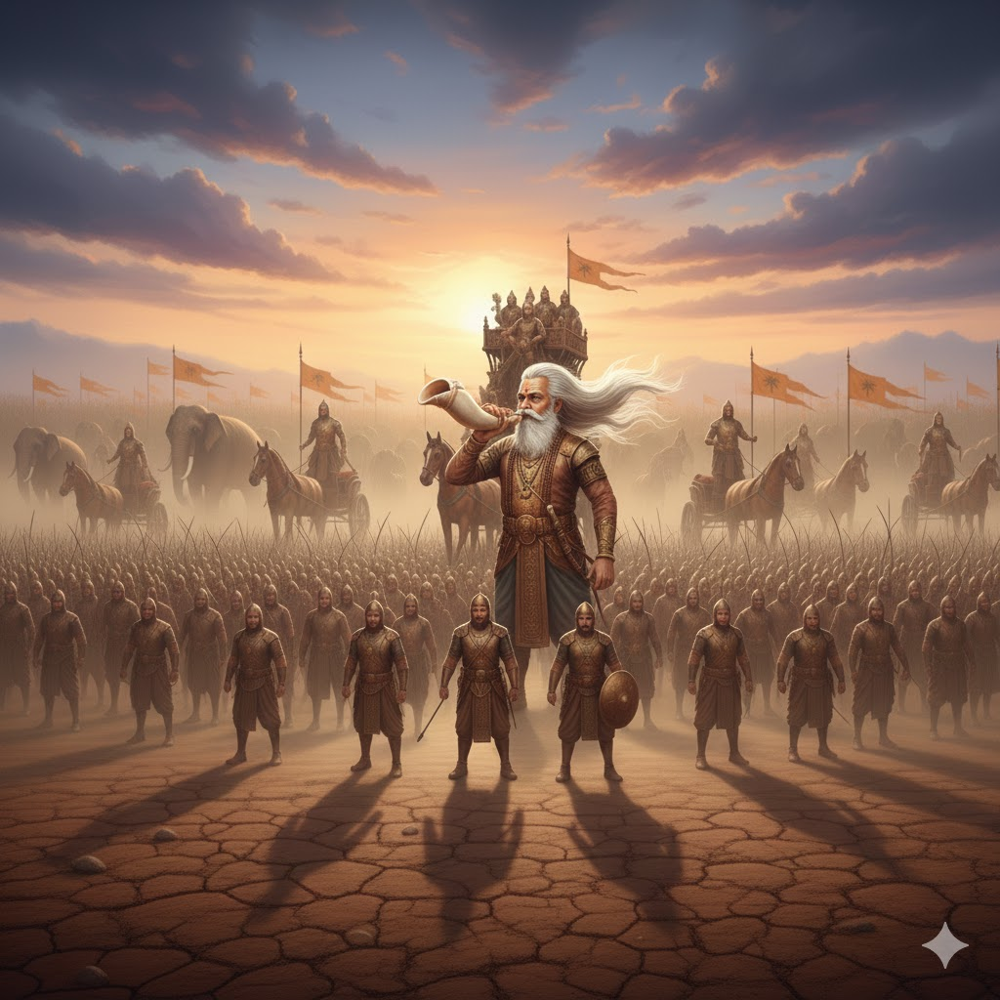

সরল ভাবার্থ
তখন কৌরব বংশের বৃদ্ধ পিতামহ প্রতাপশালী ভীষ্ম দুর্যোধনের মনে আনন্দ জাগানোর জন্য সিংহের ন্যায় হুংকার দিয়ে উচ্চস্বরে শঙ্খ বাজালেন।
বিস্তারিত ধর্মীয় ব্যাখ্যা
দুর্যোধনের মনের ভয় এবং দ্বিধা বুঝতে পেরে পিতামহ ভীষ্ম তাঁর প্রতি করুণাবশত শঙ্খ বাজিয়ে যুদ্ধের ঘোষণা করলেন। ভীষ্মকে এখানে 'কুরুবৃদ্ধঃ' বলা হয়েছে, কারণ তিনি কেবল বয়সে বড় ছিলেন না, তিনি ছিলেন কুরু বংশের অভিজ্ঞতার আধার। সিংহের মতো গর্জন করে তাঁর এই শঙ্খনাদ ছিল অত্যন্ত বীরত্বপূর্ণ। কিন্তু এই আনন্দের আড়ালে একটি করুণ সত্য ছিল—ভীষ্ম জানতেন যে এই যুদ্ধে কৌরবদের পতন নিশ্চিত। তিনি কেবল দুর্যোধনের মুখে হাসি ফোটানোর জন্য এবং ক্ষত্রিয় ধর্ম পালনের জন্য এই শঙ্খ বাজিয়েছিলেন।
ধর্মীয় তত্ত্বে এটি 'কর্তব্য বনাম বিবেক' এর একটি প্রতিফলন। ভীষ্ম জানতেন দুর্যোধন অন্যায় করছেন, কিন্তু তাঁর প্রতিজ্ঞা তাঁকে কৌরবদের হয়ে লড়তে বাধ্য করছিল। এই শঙ্খনাদ ছিল কুরুক্ষেত্রের যুদ্ধের আনুষ্ঠানিক ঘণ্টা। এটি যেন এক মহাপ্রলয়ের সংকেত। সিংহনাদ দিয়ে তিনি বোঝাতে চেয়েছিলেন যে তাঁর শৌর্য এখনো ম্লান হয়নি, কিন্তু হৃদয়ে তিনি পাণ্ডবদের মঙ্গলের জন্যই প্রার্থনা করছিলেন। জীবনের অনেক ক্ষেত্রে আমাদেরও এমন পরিস্থিতির সম্মুখীন হতে হয় যেখানে আমরা জানি যে পথটি ভুল, কিন্তু দায়িত্বের চাপে আমাদের সেই পথেই এগোতে হয়। ভীষ্মের এই শঙ্খধ্বনি ধৃতরাষ্ট্রের প্রাসাদে থাকা সঞ্জয়ের দিব্যদৃষ্টিতে ধরা পড়েছিল। এটি ছিল কৌরব পক্ষের শেষ উজ্জ্বল মুহূর্ত। এরপর থেকে পুরো গীতা জুড়েই ধর্মের জয়গান এবং অধর্মের বিনাশের কাহিনী শুরু হয়েছে।

[ছবি: পিতামহ ভীষ্ম তাঁর বিশাল রথের ওপর দাঁড়িয়ে সিংহের মতো হুংকার দিয়ে সাদা শঙ্খ বাজাচ্ছেন, তাঁর চুল ও দাড়ি বাতাসে উড়ছে।]